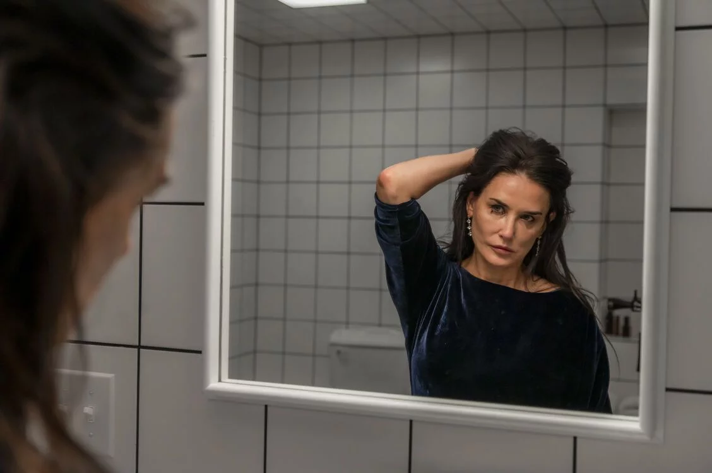

-
Nieuw
Zinderend historisch drama
Meer info -
Nieuw
Heerlijke mix van body horror & satire
Meer info -
Kom je bij ons werken?
Gezocht: ervaren keukenpersoneel
Bekijk vacature -
Nieuw
Gezellig griezelen
Meer info
Films
-
-
Beetlejuice Beetlejuice
Regie Tim Burton
Duur 144 Min.
Genre Komedie
Cast Michael Keaton, Winona Ryder, Catherine O'hara, Justin Theroux, Jenna Ortega, Monica Belluci, Willen Dafoe
Land VS
Taal Engels gesproken, Nederlands ondertiteld
-
Joker: Folie á deux
Regie Todd Phillips
Duur 138 Min.
Genre Thriller, Musical
Cast Joaquin Phoenix, Lady Gaga
Land VS
Taal Engels
Ondertiteling Nederlands
-

The Substance
Regie Coralie Fargeat
Duur 142 Min.
Genre Thriller, Horror
Cast Margaret Qualley, Dennis Quaid, Demi Moore
Land VS
Taal Engels gesproken, Nederlands ondertiteld
-
Eten
Petit Resto
Je bent bij ons altijd welkom voor een drankje, hapje, lunch en diner. We serveren zowel binnen als buiten op ons grote terras aan de oever van het IJ.
Reserveringen
Reserveringen nemen we aan voor groepen vanaf 6 personen. Reserveren mag telefonisch via: 020 – 363 85 02, of mail naar info@fchyena.nl.
Ben je met een kleiner gezelschap; kom dan gewoon aanwaaien. We hebben genoeg ruimte en (bijna) altijd wel plek beschikbaar.
Voor Valentijnsdag (14 februari) maken we een uitzondering en kun je een tafel reserveren al vanaf 2 personen.
Tijdens de feestdagen hebben we afwijkende openingstijden. Op 25 december en 1 januari zijn we gesloten. 31 december zijn we open tot een uur of uur.
Openingstijden keuken
De keuken is momenteel dagelijks geopend van – en van – uur.
Doordeweeks serveren een beperkte lunch, met bijvoorbeeld tosti’s en kleine hapjes / snacks. In het weekend kun je bij ons uitgebreider lunchen vanaf uur.
Ons menu
We voeren een wisselende kaart en koken het liefst met hoogwaardige en seizoensgebonden ingrediënten. Bijna al onze gerechten worden met aandacht bereid in onze hout gestookte steenoven.
We hebben een bijzondere verzameling vin nature, waarvan velen per glas verkrijgbaar zijn. Daarnaast schenken we een aantal natuurlijke ciders.
Nieuws
Heerlijke mix van body horror & satire
Demi Moore speelt een van haar beste rollen ooit in ‘The Substance’: een doldrieste nachtmerrie die een knoop in je maag legt
TV-persoonlijkheid op haar retour Elizabeth Sparkle (Moore, fantastisch gecast), kan dankzij vreemd, verder niet uitgelegd middeltje (verstandig, want het slaat nergens op) veranderen in een jongere, veel strakkere versie van zichzelf. Die versie heet Sue (Margaret Qualley) en ze is een instant succes. Probleem is wel dat Sue niet meer terug wil naar Elizabeth, wat grote gevolgen heeft voor de lichamen van beiden.
Slimme satire op ouder worden, schoonheidsidealen en het mannelijke staren. Geregisseerd door de Française Coralie Fargeat, die we nog kennen van het zeer vermakelijke wraakdrama Revenge (2017).
NRC ★★★★ “Een surrealistisch splatterfestijn over seksisme waar Cronenberg en Verhoeven nog van kunnen leren”
Trouw ★★★★★ “Wat The Substance zo goed en zo uitzonderlijk maakt, is dat de film geen enkel compromis sluit.“
Visueel intigerend

In de dictatoriale stadsstaat Schirkoa dragen alle burgers papieren zakken over hun hoofd en zijn namen verleden tijd: iedereen is slechts een nummer.
We volgen politicus-in-de-dop 197A, die bij zichzelf een chronische onvrede bespeurt. Maar de stad uitvluchten op zoek naar vrijheid, zoals zijn geliefde (zak 242B) wil, dat gaat hem te ver. Wanneer hij op het dak van een gebouw een jonge vrouw ontmoet, krijgen de twee een relatie. Die er uiteindelijk toe zal leiden dat zak 197A een revolutie ontketent.
De visuele stijl van de film is indrukwekkend. Regisseur Shukla genereerde de animatie met een zogenaamde game-engine, wat een mooie en energieke combinatie van 2D en 3D oplevert.
NRC ★★★★ ‘Gecompliceerd, filosofisch, maatschappijkritisch en symbolisch zeer diepgaand’
Ontroerende, rauwe Britpop-doc

Blur: To The End toont het meest recente hoofdstuk van de legendarische Britpop-band, vastgelegd tijdens de periode waarin ze een verrassende & emotionele terugkeer maakten met hun eerste plaat in acht jaar.
De documentaire volgt de unieke relatie van vier vrienden – en bandleden – Damon Albarn, Graham Coxon, Alex James en Dave Rowntree toen ze begin 2023 samenkwamen om nieuwe nummers op te nemen in aanloop naar hun uitverkochte, allereerste shows in het Londense Wembley Stadium in juli afgelopen zomer.
NME ★★★★★ “Britpop legends prove love and friendship outlasts all. This moving new doc asks existential questions of the indie icons on their road to Wembley”
Rolling Stone ★★★★ “A heartfelt and often hilarious look at their reunion. This intimate, revealing look at Blur’s reunion is a must-watch for fans of the Britpop icons”
Gezellig griezelen
Vanaf nu te zien in FC Hyena: Beetlejuice Beetlejuice. De uitzonderlijk creatieve & fantasierijke Tim Burton vindt zijn mojo terug.
Na een onverwachte tragedie in de familie keren drie generaties van de familie Deetz terug naar Winter River. Lydia (Winona Ryder) is nog steeds getraumatiseerd door Beetlejuice (Michael Keaton) en haar leven wordt compleet op z’n kop gezet als haar opstandige tienerdochter Astrid (Jenna Ortega) op zolder de mysterieuze maquette van het stadje ontdekt en per ongeluk het portaal naar het hiernamaals opent.
NRC ★★★★ “Vrolijke, aanstekelijke komedie. Gezellig griezelen voor het hele gezin, met Beetlejuice eens te meer als clown en ‘trickster’ die ontregelt”
Post humanisme x Fc Hyena
In de reeks POSTHUMANISME X FC HYENA kijk je films die de essentie van de mens bevragen, onderzoeken en vooral: verbeelden. Een serie met moderne klassiekers, om weer eens van te genieten, of die ene must-see waar je nooit eerder aan toe kwam!
Vanaf 19 September in FC Hyena. Meer info via deze link.
Info
-
Openingstijden
We zijn een half uur voor aanvang van de eerste film van de dag open. Doorgaans is dit doordeweeks van 12.00 – 01.00 uur en in het weekend van 11.00 – 01.00 uur
(Tijdens schoolvakanties zijn er afwijkende tijden.)Op Koningsdag, 25 december en 1 januari zijn we gesloten. Op 31 december zijn we open tot een uur of 18.00.
Openingstijden keuken
Dagelijks serveren we lunch van 12:00 tot 16:30 uur.
Vanaf 17:30 tot 22:00 uur is de keuken open voor diner.Tussen 16:30 en 17:30 uur is de keuken even gesloten, maar is het wel mogelijk om wat kleine hapjes/snacks te bestellen.
Reserveringen
Voor 24 en 26 december maken we een uitzondering en kun je een tafel reserveren al vanaf 2 personen. Anders nemen we alleen reserveringen aan voor groepen vanaf 6 personen.
Vanwege de drukte in ons restaurant zijn we telefonisch via 020 – 363 85 02het best bereikbaar tussen 12:00 en 17:00 uur. Mocht u ons niet te pakken kunnen krijgen dan mag u ons ook mailen via info@fchyena.nl.
Ben je met een kleiner gezelschap; kom dan gewoon aanwaaien. We hebben genoeg ruimte en (bijna) altijd wel plek beschikbaar.
Filmkaartjes
Voor onze reguliere kaartjes betaal je €11,50 (avond en weekend) of €10,00 (overdag).
Voor films langer dan 150 minuten geldt een toeslag van €1,00
Kinderfilmtickets zijn €8,00
De Cinevillepas is bij ons geldig.
Verder hanteren we €2,- korting voor studenten, CJP-leden en voor bewoners van Amsterdam Noord (op vertoon van huisvuilpas).Kaartjes zijn te koop aan de kassa en via deze website. Betalen online kan met iDEAL of creditcard. Na betaling krijg je e-tickets per mail toegestuurd. Kaartcontrole is aan de kassa.
Zie de Algemene Voorwaarden informatie over aankopen op onze website
Parkeren
Parkeren kan voor de deur of op het naastgelegen Hamerkop parkeerterrein. Startbedrag voor de eerste 3 uur is 5 euro, daarna €1,60 per uur.
Betalen bij de slagboom zelf, met een pinpas.
Voor minder validen is er een parkeerplek direct naast het terras, deze plek valt wel onder het betaald parkeren.
Openbaar vervoer
FC Hyena is ongeveer 15 lopen vanaf Metrostation Noorderpark (Metro 52).
Vanaf de bushalte Johan van Hasseltweg (Stadsbus 35) is het een kleine 10 minuten lopen.Social media
Volg ons op FACEBOOK en INSTAGRAM voor informatie over de filmagenda & speciale events.
-
FC Hyena is een Boutique Cinema en Petit Restaurant gelegen aan de oever van het IJ in Amsterdam Noord.
We houden van film, eten en wijn. Omdat we deze drie dingen vaak tegelijkertijd doen, bedachten we een plek waar dit mogelijk zou zijn.
FC Hyena is een kleurrijke plek geworden met een easy-going vibe. De film-buff, de foodie en de wijnliefhebber van alle leeftijden kan zich bij ons welkom voelen. We laten je graag glimlachen. We nemen onszelf niet te serieus, maar zijn wel serieus in wat we doen.
We houden van film! We vertonen een breed scala aan mainstream en independent films. Hollywood-klassiekers, speciale evenementen en kenmerkende programmering. We draaien iedere film waarvan we denken dat je het leuk zou vinden om hem op het grote scherm te zien.
We zijn ook enthousiast over de natuurwijnen die we graag drinken. En over koken met hoogwaardige en seizoensgebonden ingrediënten. Bijna al onze gerechten worden met aandacht bereid in onze hout gestookte steenoven.
-
Nieuwsbrief:
Meld je nu aan op onze nieuwsbrief en blijf op de hoogte van het laatste (film)nieuws en acties.
Google maps - Aambeeldstraat 24
- 1021KB Amsterdam
- T +31 20 363 85 02
- info@fchyena.nl
- KVK : 65762444
- BTW : 856249403B01
-
Onze filmzalen doen tevens dienst als workshop-, presentatie- en vergaderruimte. Zaal 1 is perfect voor groepen van 60, zaal 2 voor ongeveer 100 en in het restaurantgedeelte passen ongeveer 100 personen.
Meer weten? Mail naar info@fchyena.nl.
-
Altijd al willen werken op een energieke plek en houd je van film, eten en (natuur)wijn? Dan ben je bij ons aan het goede adres. Zijn er geen vacatures beschikbaar, dan mag je ons altijd een open sollicitatie sturen. Graag alle sollicitaties naar lotte@fchyena.nl.
Sous-chef
We zijn per direct op zoek naar een full-time sous-chef voor in de keuken.
Als sous-chef ben je de rechterhand van de chef kok. Samen zijn jullie verantwoordelijk voor het coördineren en organiseren van de werkzaamheden in de keuken.
Taken:
- Ons keukenteam aan te sturen
- Je creativiteit in te zetten bij het ontwikkelen van de nieuwe menukaart
- De kwaliteit te bewaken en controleren
- De keuken, koelingen en magazijn ordelijk en schoon te houden
- Elke dag goed voorbereid te zijn
- Zelf gerechten te bereiden
- De dagelijkste bestellingen te doen
Heb je interesse? Stuur dan een CV en motivatie naar lotte@fchyena.nl